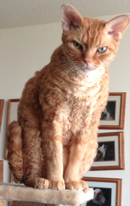

The Devon Rex is a breed of intelligent, short-haired cat that emerged in England during the 1960s. They are known for their slender bodies, wavy coat, and large ears. These cats are capable of learning difficult tricks. They are even known to recognize their owner's name, just as they do their own.
References:
This article uses material from the Wikipedia article "Devon Rex", which is released under the Creative Commons Attribution-Share-Alike License 3.0.
Picture: By Gregory Williams